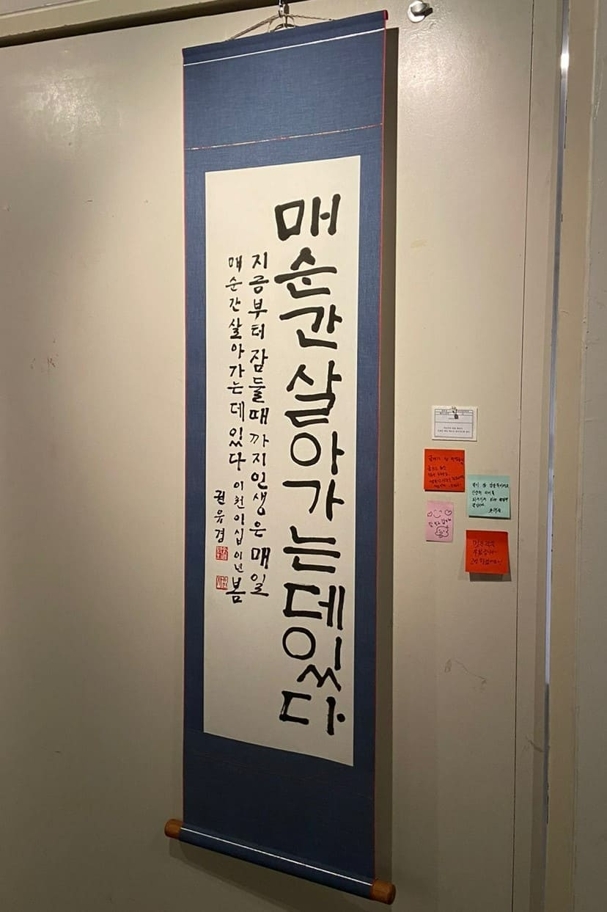
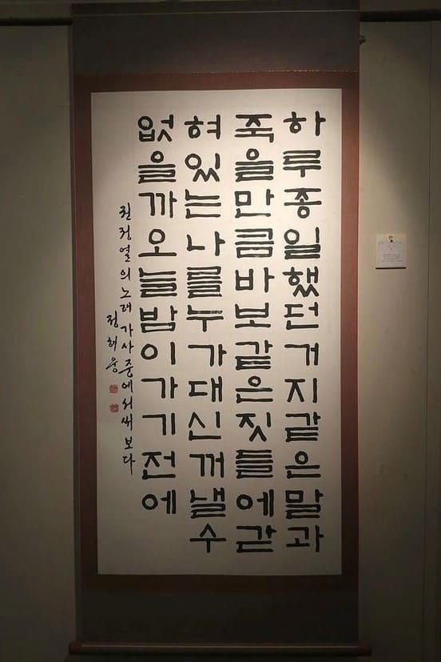
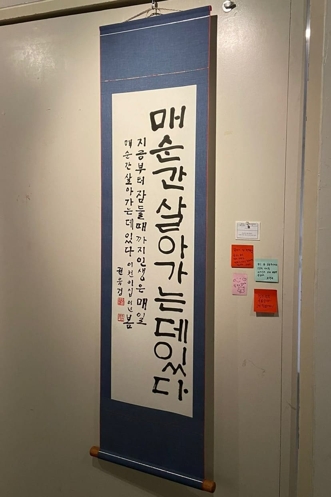
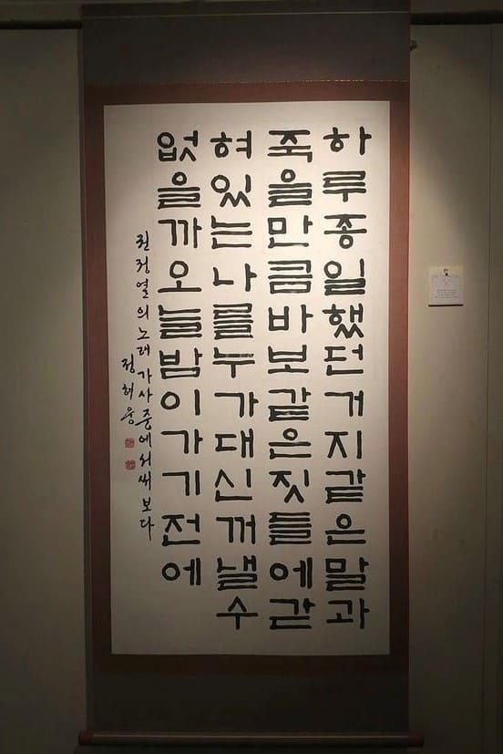
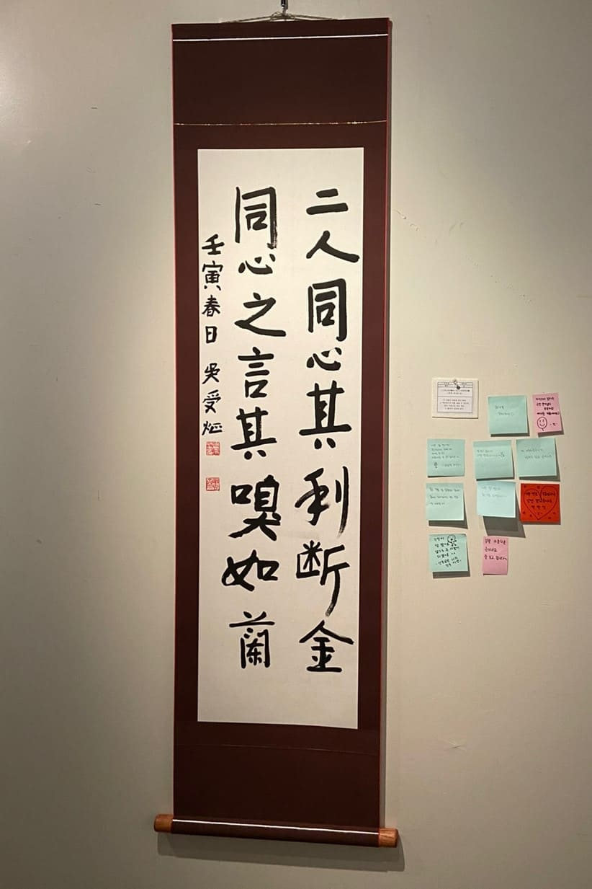
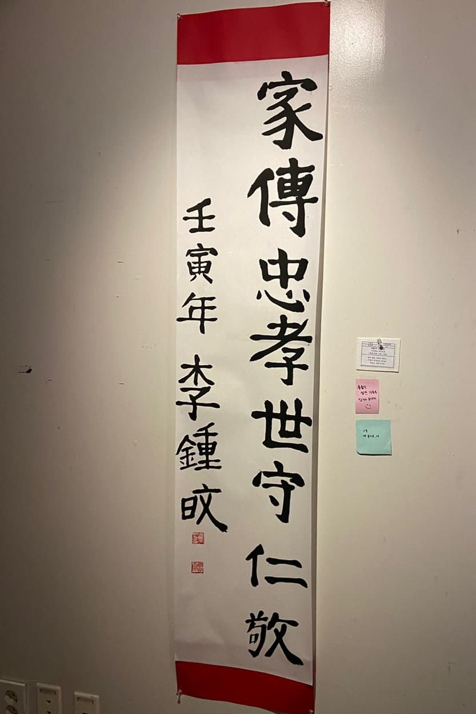
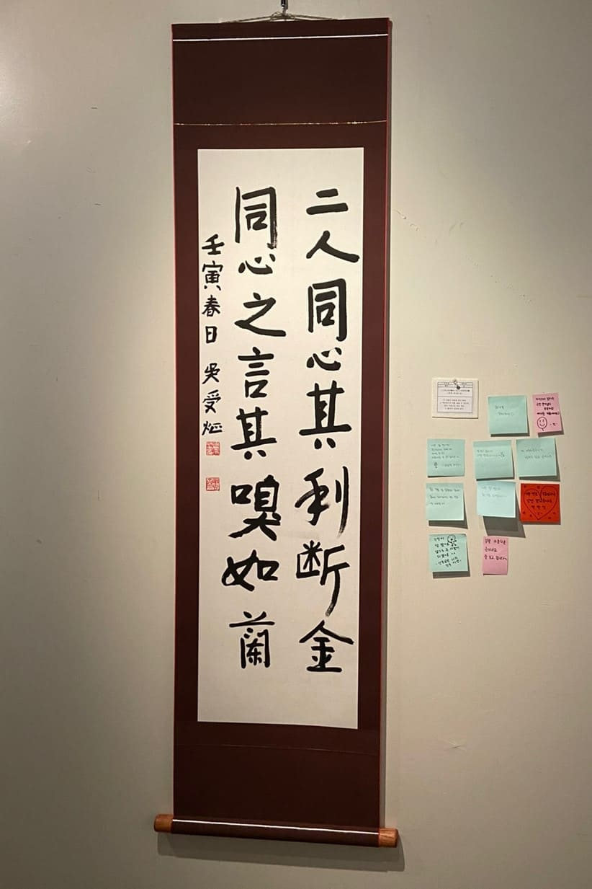
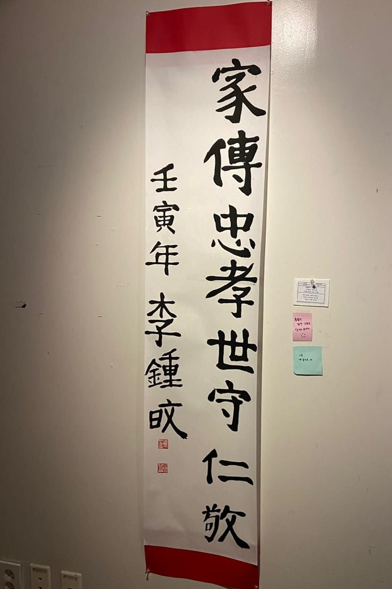

연서회
학생회관 317호
위치
@yoenseo_soongsil
인스타


 





 




코로나로 인하여 2년 동안 전시회를 하지 못하는 등 동아리 운영에 어려움이 있었으나 지난 1학기 전시와 이번 22년도 2학기 정기전시로 동아리 전시회는 완전히 정상화를 이루었다고 자신합니다. 이와 더블어 50년을 맞이한 연서회를 축하하고, 이번 전시회에 와주신 모든 분들께 감사 인사를 전합니다. 전시회에서 회원분들의 노력의 흔적을 즐겨주시면 감사하겠습니다.
늘 차분하게 살펴 지도해주시는 석오 원명환 선생님과 묵묵히 할 일에 최선을 다해준 임원진들, 멋진 작품들로 전시회를 빛내기 위해 노력해준 연서회 친구들, 언제나 응원해주시는 졸업생 선배님들에게 모두 이 지면을 빌려 고맙고 감사하다는 말을 전하고 싶습니다.
1년 동안 연서회 회장을 하며 이곳에서 좋은 인연과 추억들을 많이 쌓았습니다. 앞으로도 은은한 묵향과 함께 행복한 기억들을 쌓을 수 있는 동아리이기를, 50년 그 이상을 바라보는 동아리로 연서회가 발전하기를 진심으로 바랍니다.
學道非他在日强 精微到處要商量 (학도비타재일강 정미도처요상량) 도를 배움은 무엇보다 나날이 굳세짐에 있나니 정미한 곳에 이르려면 깊이 따져 생각해야 한다. 「기의중」 中
이번 학기에 무너진 학점을 다시 쌓으면서 자신이 좋아하고 흥미 있는 분야의 공부를 해야 제가 진정으로 원하는 길을 걸을 수 있다고 생각했습니다.
即世間而出世間(즉세간이출세간) 세간(현실)에 있을 때도 출세간(열반)에 있는 것처럼 살자. 그러나 세간(현실)에 있다는 것을 잊지 말자.
펑유란의 「간명한 중국철학사」에 나오는 글귀입니다. 이 글귀는 유가와 중국철학의 세간적이면서 출세간적인 특징에 관한 것입니다. 수업 시간에 듣고 인상 깊게 느껴 적었습니다.
梅經寒苦發淸香 (매경한고발청향) 매화는 추위의 고통을 이겨내고 맑은 향기를 풍긴다. 「시경(詩經)」 中
매화는 추위의 고통을 이겨내고 맑은 향기를 풍긴다.
知者樂水 仁者樂山 (지자요수 인자요산) 공자님 말씀에, ‘지혜로운 자는 물을 좋아하고 인자한 자는 산을 좋아한다’라고 했습니다." 난 인자한 사람이 아닙니다. 난 바다가 좋아요. 「헤어질 결심」 中
저도 바다를 좋아한답니다.
不爲也非不能也 (불위야비불능야) 하지 않는 것이지, 할 수 없는 것이 아니다. -맹자- 양혜왕장구 상, 7편 中
할 수 있음에도 하지 않으며 본인을 기만하고, 타인을 속이는 자에게 해준 말입니다. 능력 부족이라고 자신을 깎아내리지만, 실상은 그 반대인 사람, 즉 태만한 자를 꾸짖는 거죠. 한없이 게을러지고 싶을 때, 게으름을 피운 결과물을 마주하고도 회피할 때 현실을 외면해서는 안 된다는 옛 성인의 잔소리. 현시대를 살아가는 우리에게도 큰 깨달음을 전해줍니다.
君子居之 何陋之有 (군자거지 하루지유) 군자가 거주하는 곳이 어찌 누추할 수 있겠느냐? 「논어」 中
저 구절은 '군자가 거주하는 곳이 어찌 누추할 수 있겠느냐?' 라는 의미를 갖고 있습니다. 우리가 흔히 말하는 '자리가 사람을 만든다.'라는 말을 반전시켜, 사람이 자리를 만들고 환경을 만들고 시스템을 만든다는 뜻이랍니다. 저는 이런 사람이 되고 싶습니다. 제 지위나 환경이 아니라 저라는 존재만으로 사람들에게 영향을 끼치고 싶습니다. 그리고 이 꿈을 이루기 위한 초석으로, 저 자신을 드러냄에 있어 부끄러움이 없는 사람이 되고 싶습니다. 이 글을 읽는 여러분은 어떤 사람이 되고 싶으신가요?
信言不美美言不信 (신언불미미언불신) 믿음직한 말은 꾸밀 필요가 없고, 꾸민 말은 믿을 수 없다. -노자- 中
"믿음직한 말은 꾸밀 필요가 없고, 꾸민 말은 믿을 수 없다. 老子(노자) 믿을 신, 말씀 언, 아닐 불, 아름다울 미. 비슷하게 대칭된 한자들로 다른 뜻을 나타내는 매력적이고 뜻깊은 문장입니다.

태양을 바라보며 살아라. 그대의 그림자를 못 보리라. -헬렌 켈러-
헬렌 켈러의 명언을 재해석해 삶에 대한 도전정신을 강렬한 캘리그라피와 정갈한 한글 서예체로 표현한 작품입니다. 틀을 깨고 나와야만 보이는 태양처럼 밝은 빛을 질서 없이 강렬함만을 강조해 적은 캘리그라피로 표현해보았습니다. 동시에 정적이고 규칙적인 배열의 한글서예체를 사용해, 밝게 빛나는 모습 이면에 숨은 노력을 표현했습니다.
권리 위에 잠자는 자는 보호받지 못한다 「권리를 위한 투쟁」 中
두꺼운 법학 전공책에는 많은 권리가 나오지만, 가만히 있다면 그것들을 보장받을 수 없습니다. 권리뿐만 아니라 이 세상도 마찬가지라는 생각을 합니다. 기회를 잡기 위해서는 세상에 계속 외쳐야 합니다. 저는 무엇을 외칠지를 고민하는 중입니다.
種德施惠 (종덕시혜) 덕을 쌓고 은혜를 베풀다. 「채근담」 中
내가 너로 큰 민족을 이루고 내게 복을 주어 네 이름을 창대케 하리니 너는 복의 근원이 될지라 -창세기- 12장 2절 中
평소에 좋아하는 성경 구절이기도 하고, 이 말씀처럼 사람들에게 선한 영향을 주는 사람이 되고 싶은 마음을 담아 작품을 완성했습니다. 많은 분께 좋은 메시지로 전달되었으면 좋겠습니다!!
누가 그랬다. 풀잎에도 상처가 있다고 꽃잎에도 상처가 있다고. 누가 그랬다. 상처가 없는 사람은 없다. 그저 덜 아픈 사람이 더 아픈 사람을 안아주는 것이다. 「누가 그랬다」
여러 경험을 통해 사람과 사랑의 힘을 믿게 되었습니다. 상처 하나 없는 사람이 어디 있겠습니까. 힘든 세상 서로 다독이며 나아가고 싶다는 생각에 부합하는 시의 구절을 하나 찾아 판본체로 써보았습니다.
그것이 죄가 될지 독이 될지 혹은 꿀이 될지 영원히 알 수 없더라도 나는 이 항해를 멈추지 않으리. 「아몬드」 中
책 <아몬드>에서 나온 구절입니다. 인생이라는 항해에서 내가 얻게 될 것이 무엇인지는 영원히 알 수 없겠지만 멈추지 않고 계속해서 나아가겠다는 마음가짐을 담았습니다.
슬픔은 손 흔들며 오는 건지 가는 건지 -슬픔이여 안녕- 中, 잔나비
잊을 수 없는 9월 마지막 날, 학교 페스티벌에서 처음으로 잔나비를 봤다. 4년 전 록 음악 동아리 멤버들과 '주저하는 연인들을 위해'를 불렀던 것도 생각났고 그동안 잔나비 노래를 들으며 집으로 가는 길을 걸었던 밤들... 들을 때마다 나한테 위로가 된 날들... 울었던 날들 그리고 웃었던 날들... 기억은 쏟아버린 구슬처럼, 잔나비의 그 밤 그 밤 노래처럼, 하나하나 쏟아버린 느낌이었다. 잔나비 노래는 슬픔이나 외로움을 이야기하는데도 듣는 사람의 기분을 밝게 해주는 그런 마법을 가진 것 같다. 노래 <슬픔이여 안녕>에 나온 ‘슬픔은 손 흔들며 오는 건지 가는 건지’를 선택한 이유는 바로 이것 때문이다. 슬픔은 올 때도 있고 갈 때도 있지만 잔나비를 들으면 보통 가는 편인 것 같다.♡ always love you 잔나비
중요한 것은 꺾이지 않는 마음 -김혁규-
몇번이고 실패해도 괜찮아요. 중요한 것은 꺾이지 않는 마음이니까.

꿈을 이루지 못하게 만드는 것은 실패할지도 모르는 두려움이다. 인생은 도전이다!
인생은 도전하면서 살아가는 거라 생각하는 저의 가치관을 담은 작품입니다!
오직 너를 위하여 모든 것에 이름이 있고 기쁨이 있단다 나의 사람아 「너를 위하여」 中
김남조 시인의 시에서 따온 구절입니다. 온 마음으로 사랑하는 사람에게 하는 말이기도 하지만, 동시에 자신을 향한 혼잣말이라고 생각합니다. 제가 눈으로 바라보고 바깥에 나서야 세상은 실존하는 것이 됩니다. 제가 눈과 마음을 닫아버리면 세상은 무의미해지는 것이 아닐까요?
盡人事待天命 (진인사대천명) 사람이 할 수 있는 최선을 다한 후, 결과는 운명에 따른다.
좋은 성적을 받고 싶어서 최선을 다했던 시험이 있었는데, 그 시험이 끝나고 나서도 헷갈렸던 문제의 답에 대해 계속 생각을 했었습니다. 그러다가 다음 시험을 준비해야 하는 시간을 낭비해버렸죠. 그 후 고등학교 선생님께서 수업 시간에 '진인사대천명 '을 알려주셨습니다. 그 한자성어의 뜻을 듣고 나서 전에 봤던 시험이 떠올랐습니다. 그때처럼 과거의 일에 너무 미련을 갖다가는 지금 이 소중한 시간을 허비하게 된다는 사실을 깨달았습니다. 그래서 지금은 내가 어떤 일에 최선을 다했다면 그 결과를 차분히 기다리면서 현재의 일을 열심히 하자는 생각을 하고 있습니다.
盛年不重來 一日難再晨 (성년부중래 일일난재신) 젊은 나이는 두 번 다시 오지 않고, 하루에 새벽은 두 번 다시 오지 않네. 「명심보감」 中
당신이 살아가고 있는 지금 이 순간이 바로 청춘입니다. 항상 새로운 마음으로 희망찬 삶을 살아봅시다.
騰漢庭而皎夢 照東域而流慈 (등한정이교몽 조동역이류자) 「집자성교서」 中
안탑성교서에서 발취했습니다. 뭐를 쓸 지 고민했을 때 안탑성교서를 보고 있었지만 이 글이 떡 눈에 들어와서 나고 이렇게 예쁜 글을 쓰고싶다고 해서 이 글을 선택했습니다.
人無遠慮 難成大業 (인무원려 난성대업) 사람이 먼곳까지 생각하지 않으면 큰일을 해낼 수 없다. -안중근-
'사람이 멀리 앞을 보지 않으면 큰일을 이루기 어렵다.' 안중근 의사가 옥중에서 쓰신 말씀입니다. 빡빡한 현실에 치이다 보니 너무 눈앞에 있는 것에만 집중하게 되는 것 같아요. 때로는 잠시 멈춰서서 멀리 생각해보는 것은 어떨까요?
愛心 (애심)
이 글을 보시는 분들을 위해서 제 마음을 작품에 담아보았어요. 사랑받는 것 너무 행복한 일인 것 같습니다. 그런데 사랑을 받기 전에 먼저 사랑을 줘보는 건 어떨까요? 우선 자기 자신에게 한스푼, 그리고 남에게 한스푼.

仁者無敵 (인자무적) 어진 자는 적이 없다. -맹자- 양혜왕장구 상, 5편 中
‘나'를 모든 사람이 좋아할 수 없습니다. 그렇다고 나를 좋아하지 않는 이를 적으로 만들 이유가 없죠. 누군가와 적대적인 감정을 나누고 싶어 하는 사람은 없죠. 인간은 서로 도우며 살아가는 사회적인 동물이라는 이유도 있겠네요. 그러기 위해 남보다는 '나'를 더 나은 사람으로 만들어야 한다고 생각했습니다. 마침 읽고 있던 맹자에서 이 구절을 발견했고, '어진 사람'이 되고 싶어졌습니다.